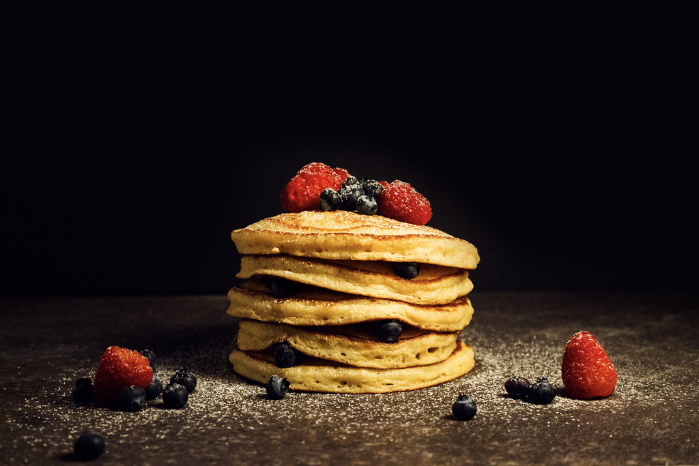

Hotcakes

Ingredients
Servings: 2
- 200 g whole milk
- 20 g melted butter
- 1 medium egg
- 20 g white sugar
- 75 g all-purpose flour
- 6 g baking powder
Preparation
- 1. Mix 100 grams of whole milk, 20 grams of melted butter, and 1 medium egg in a bowl.
- 2. Add 20 grams of white sugar and mix well.
- 3. Next, add 75 grams of all-purpose flour and 6 grams of baking powder. Mix well until there are no lumps
left and the batter is smooth and uniform.
- 4. Grease the pan with a little butter and place it over medium heat.
- 5. Pour 1/4 of the batter into the pan and let it cook over medium heat until the entire surface of the
pancake is filled with bubbles.
- 6. Flip the batter and let the pancake cook for a couple of minutes on the other side.
- 7. Remove from the heat and repeat with the rest of the batter.
Home